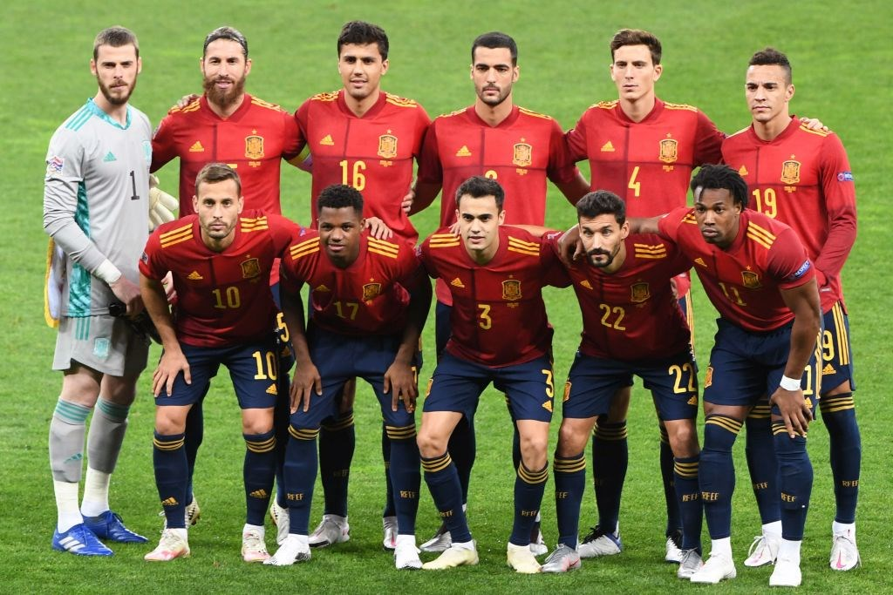
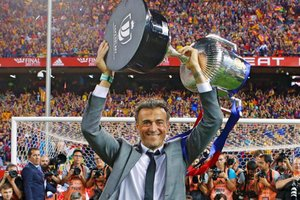

A Seleção Espanhola de Futebol é organizada pela Real Federação Espanhola de Futebol. É uma das confederações fundadoras da FIFA e um dos países com mais participações em Copas do Mundo. Entre os seus títulos, destacam-se a Copa do Mundo de 2010, os campeonatos europeus de futebol de 1964, 2008 e 2012 e a medalha de ouro nas Olimpíadas de 1992, além de outras duas de prata em 2000 e 1920. Em 1999 a Seleção Espanhola Sub-20 ganhou o Campeonato Mundial Sub-20, realizado na Nigéria. Nesse mesmo ano conquistou a medalha de ouro na Universíada. Em 1991, 2003 e 2007 obteve o segundo lugar no Campeonato Mundial Sub-17. A Espanha é uma potência do futsal, sendo a bicampeã do mundo em 2000 e 2004.
Luis Enrique: em três Copas como jogador, Luis Enrique ficou marcado pela cotovelada desferida contra o seu rosto pelo italiano Tassotti em 1994. O técnico da Espanha faz parte de um seleto grupo de jogadores que atuou por Real Madrid e por Barcelona. Foi pelo Barça que teve as maiores conquistas como atleta e como treinador. Em 2019, chegou a ficar de fora do comando da Fúria após a morte de sua filha de 9 anos. No seu retorno, disparou contra o auxiliar Robert Moreno que, segundo o treinador, queria derruba-lo do cargo. Moreno foi demitido.
| Principais Jogadores | |||
|---|---|---|---|
| Nome | Idade | Altura | Peso |
| César Azpilicueta | 33 | 1,78M | 72Kgs |
| Jordi Alba | 28 | 1,88M | 72kgs |
| Eric García | 21 | 1,88M | 78kgs |
| Dani Carvajal | 32 | 1,88M | 68Kgs |
| José Gayà | 30 | 1,75m | 77Kgs |
| Diego Llorente | 29 | 1,80m | 72Kgs |
| Pau Torres | 25 | 1,75M | 80kgs |
| Hugo Guillamón | 22 | 1,83M | 68kgs |